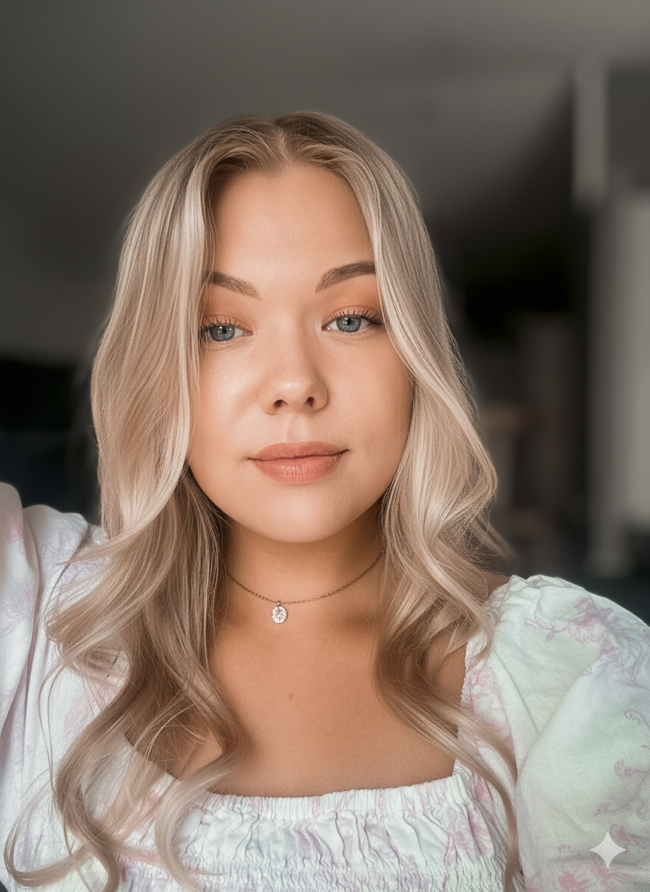
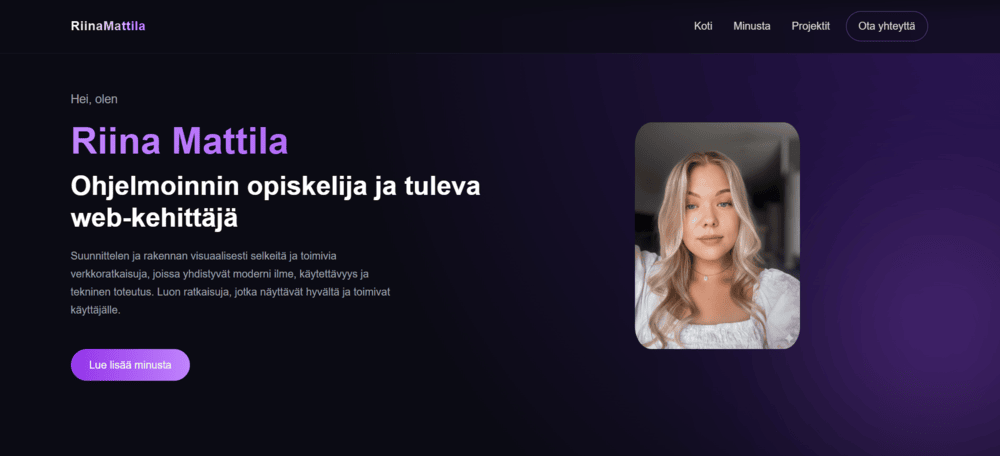
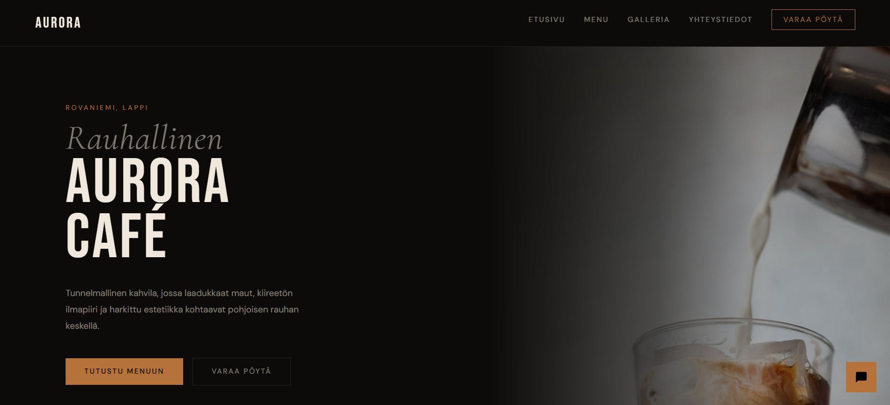
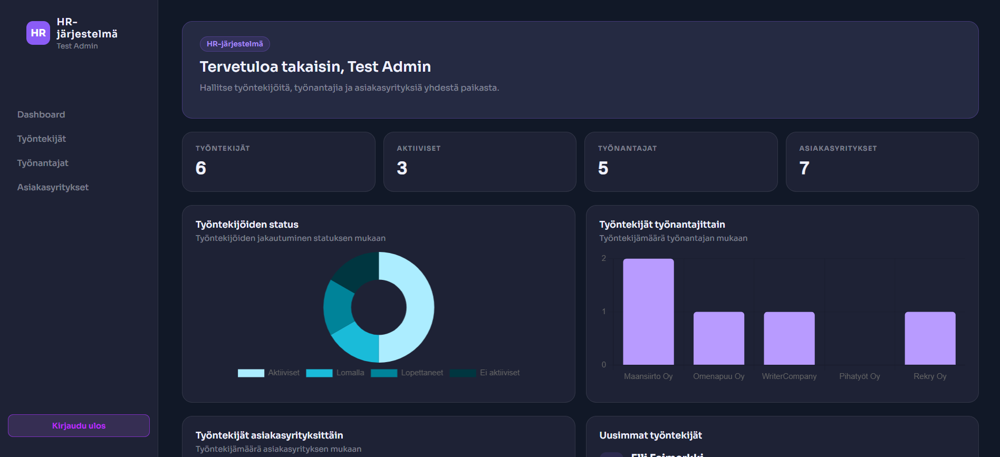

Hei, olen
Suunnittelen ja rakennan visuaalisesti selkeitä ja toimivia verkkoratkaisuja, joissa yhdistyvät moderni ilme, käytettävyys ja tekninen toteutus. Luon ratkaisuja, jotka näyttävät hyvältä ja toimivat käyttäjälle.
Lue lisää minusta
Olen ohjelmoinnin opiskelija, mutta ennen kaikkea ongelmanratkaisija, jolla on taustaa sekä asiakastyöstä että liiketoiminnan tukemisesta. Työskentelen tällä hetkellä ServiceDeskissä, jossa ratkon päivittäin järjestelmä- ja sovellusongelmia sekä autan käyttäjiä teknisissä haasteissa.
Aiempi kokemukseni HR:stä ja markkinoinnista on antanut minulle vahvan ymmärryksen siitä, miten tekniset ratkaisut linkittyvät liiketoimintaan ja käyttäjien tarpeisiin. Tämä näkyy tavassani rakentaa verkkosivuja kokonaisuutena – visuaalisen ilmeen lisäksi varmistan, että ratkaisu toimii sujuvasti ja palvelee käyttäjää.
Web-kehityksessä minua kiinnostaa erityisesti frontend, moderni UI/UX sekä käytännön toteutus. Hyödynnän työskentelyssäni myös tekoälyä suunnittelun, rakenteiden ja toteutuksen tukena, mikä nopeuttaa kehitystä ja auttaa löytämään parempia ratkaisuja.
Painopiste: Frontend-kehitys & UI/UX-suunnittelu
Koulutus: Ohjelmistokehitys, Lapin AMK
Tausta: ServiceDesk, HR, markkinointi & viestintä
Vahvuudet: Liiketoimintaymmärrys, ongelmanratkaisu
Kiinnostaa erityisesti: Tekoälyavusteinen kehitys, skaalautuvat verkkoratkaisut
Lähestyn kehitystyötä yhdistämällä teknisen toteutuksen, visuaalisen suunnittelun ja käyttäjälähtöisen ajattelun.
Rakennan responsiivisia ja visuaalisesti selkeitä verkkosivuja HTML-, CSS-, JavaScript- ja Bootstrap-teknologioilla. Minulle tärkeitä ovat toimivuus, selkeä rakenne ja hyvä käyttökokemus.
Hyödynnän GitHubia versionhallintaan, Figmaa käyttöliittymien suunnitteluun sekä WordPressiä verkkosivujen toteutuksessa. Työskentelyssäni yhdistyvät visuaalinen ajattelu ja käytännön tekeminen.
Minulla on kokemusta myös Pythonista, C#:sta ja Javasta opintojen kautta. Lisäksi hyödynnän tekoälytyökaluja ideoinnin, rakenteen suunnittelun ja toteutuksen tukena osana omaa työskentelyäni.
Rakennan parhaillani portfoliooni projekteja, joissa keskityn erityisesti frontend-kehitykseen, visuaaliseen selkeyteen ja toimiviin käyttöliittymäratkaisuihin.

Henkilökohtainen portfolio, jossa esittelen osaamistani ja web-kehitykseen liittyviä projektejani. Sivusto on toteutettu responsiivisesti HTML:llä, CSS:llä ja Bootstrapilla, ja sitä on täydennetty JavaScriptillä käyttöliittymän animaatioiden ja vuorovaikutteisuuden lisäämiseksi.

Fiktiivinen kahvilasivusto referenssiprojektina. Projektissa keskityin visuaaliseen ilmeeseen, responsiiviseen rakenteeseen ja selkeään käyttöliittymään. Sivusto on toteutettu HTML:llä, CSS:llä, Bootstrapilla ja JavaScriptillä, ja se sisältää myös chatbot-demon sekä varauslomakkeen toiminnallisuuden esittelyä varten.

Flaskilla ja SQLite-tietokannalla toteutettu full stack HR-järjestelmä työntekijöiden, työnantajien ja asiakasyritysten hallintaan. Projekti sisältää dashboard-näkymän, CRUD-toiminnot, suodatuksen ja relaatiotietokantarakenteet.
Rakennan mielelläni moderneja ja käyttäjälähtöisiä verkkoratkaisuja, joissa yhdistyvät selkeä käyttöliittymä,
toimiva tekninen toteutus ja käytännön ongelmanratkaisu. Minua motivoi erityisesti mahdollisuus
kehittyä kehittäjänä osana tiimiä ja rakentaa ratkaisuja, joilla on oikeaa merkitystä käyttäjille ja liiketoiminnalle.
Jos etsit motivoitunutta tekijää, joka yhdistää teknisen ajattelun, visuaalisen silmän ja '
halun oppia jatkuvasti uutta, ollaan yhteydessä.